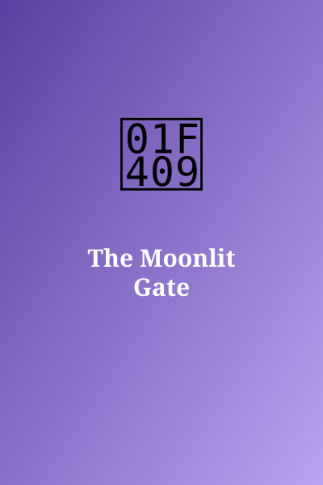

The Moonlit Gate
Author: S. T. Navarro
Genre: Fantasy
Synopsis: A farm boy discovers a door only visible at night.
Chapter 1: Silver Hinges

Under the full moon, a gate stood in Teo's cornfield. It had not been there at dinner, and it was slightly open.
To be continued...